Où les consulter ?
Directement sur le site dédié à l’Observatoire FAUNA

Hyblab 2023
L’Observatoire FAUNA est un pôle de gestion de données et d’expertises collaboratives sur la faune sauvage de Nouvelle-Aquitaine.
Celui-ci recense les espèces à partir d’observations des scientifiques et des partenaires naturalistes de la région. Pour chaque commune, elles ont été réalisées dans un périmètre de 5 km.
Les conseils ont été rédigés avec l’appui de Vincent Albouy, vice-président de l’OPEI de Poitou-Charentes, et de Sébastien Labatut, chargé d’études à la SEPANSO.
Où les consulter ?
Directement sur le site dédié à l’Observatoire FAUNA